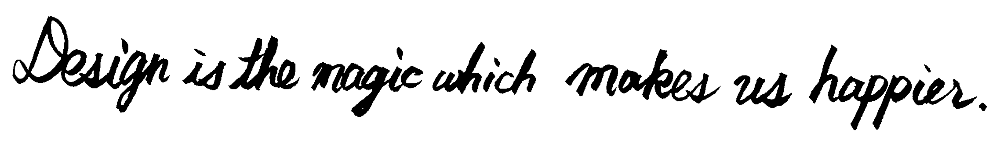
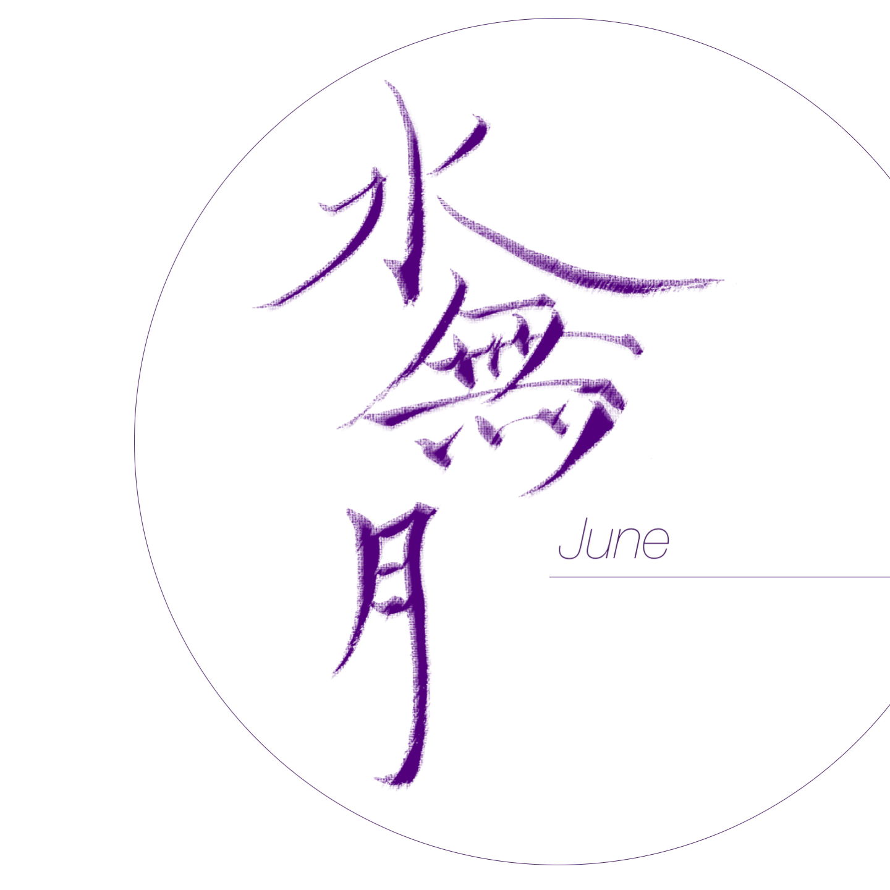
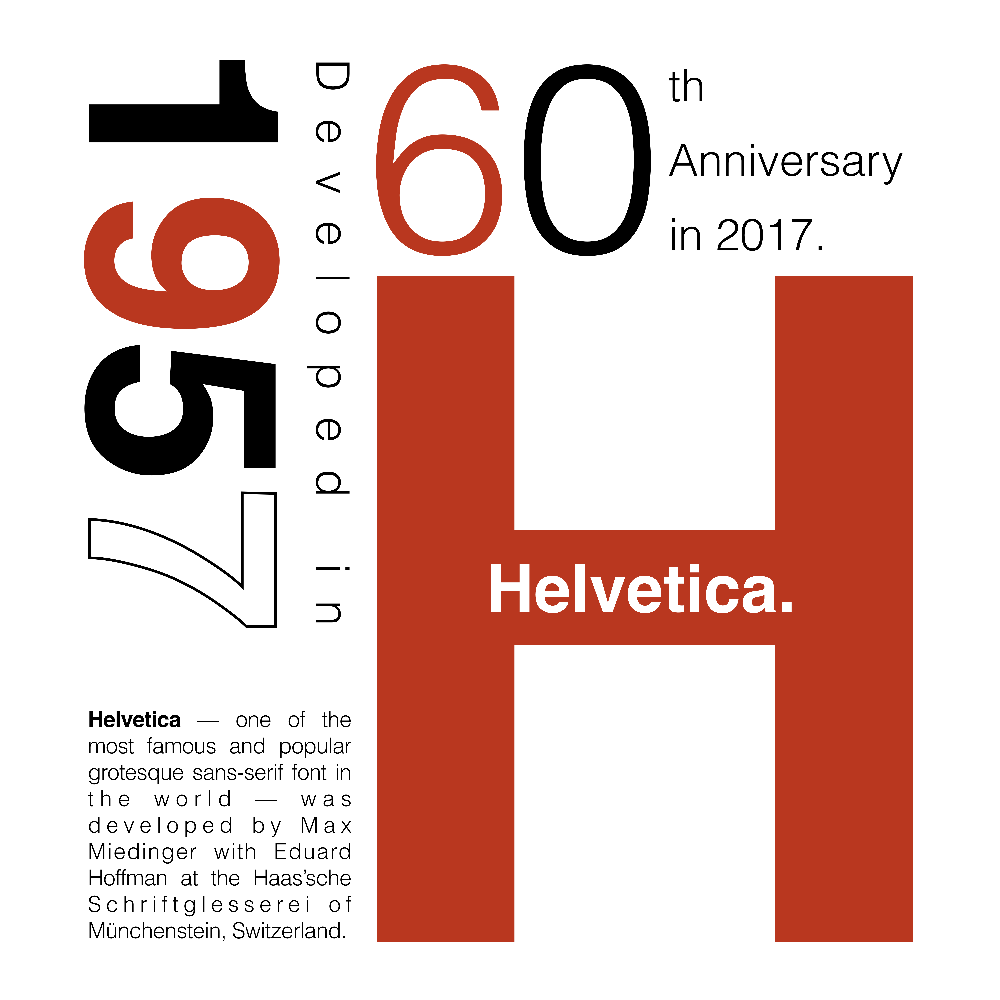
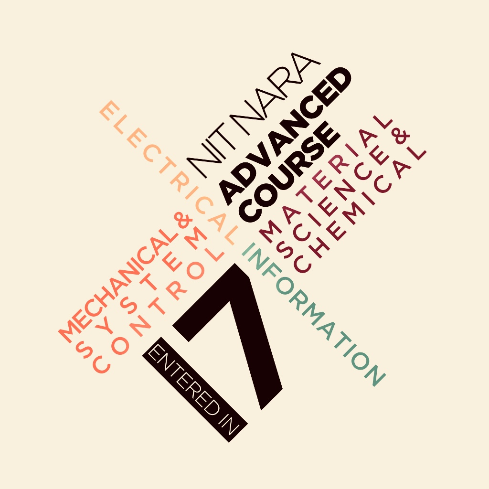
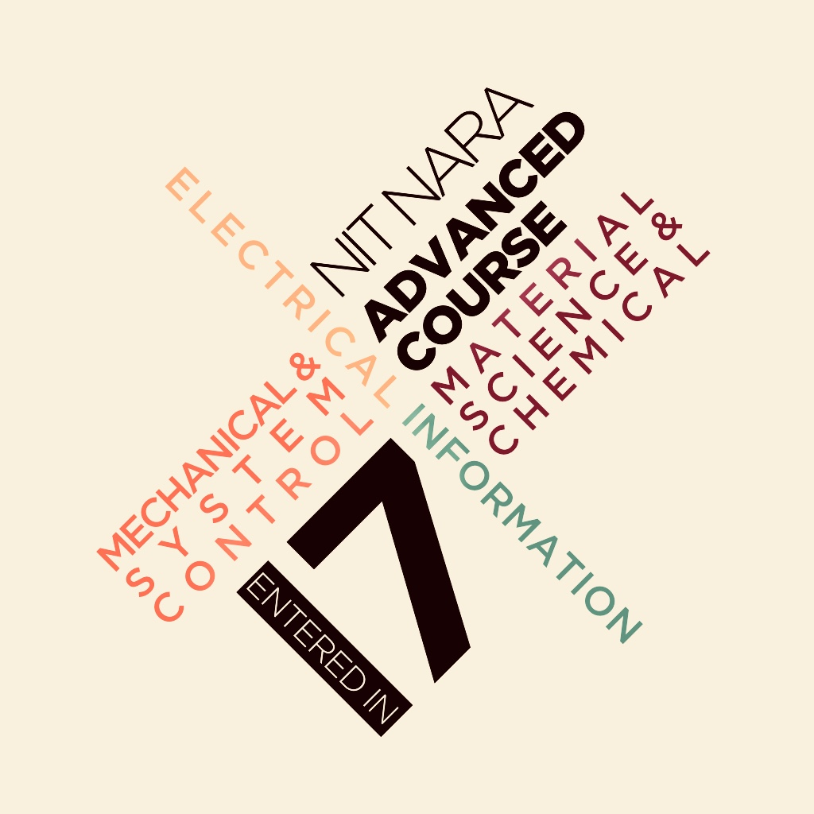
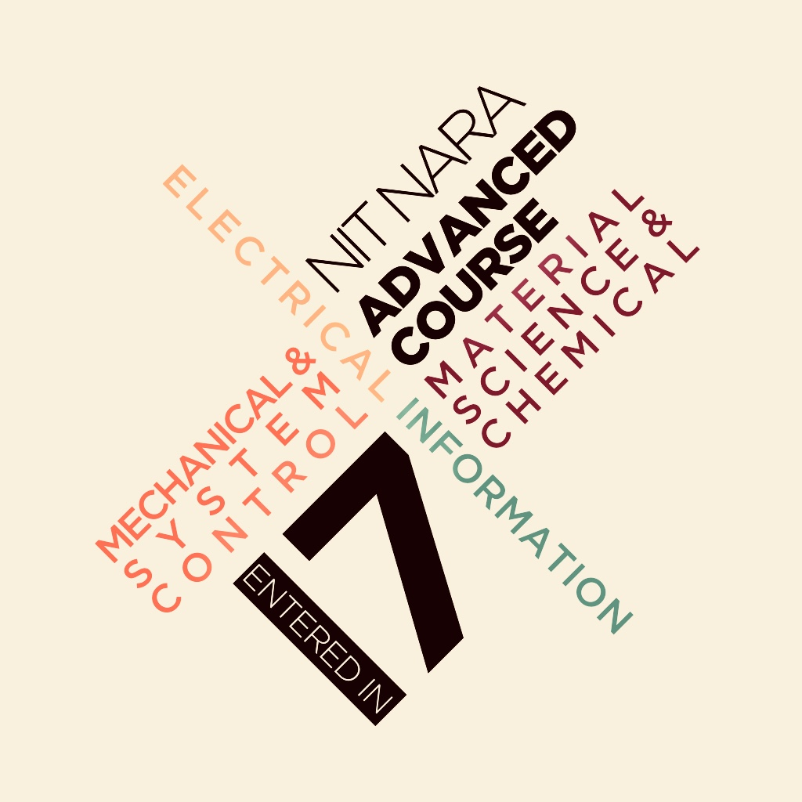

1996/12/26生まれ，AB型，奈良県出身
奈良高専システム創成工学専攻情報システムコース1年所属
フォント好きがきっかけでデザインに興味を持つようになりました．最初は，見た目こそデザインの全てと思っていましたが，システム設計の講義でデザインに対する印象を大きく変えました．それを機にデザインは多くの人を幸せにする魔法であると認識するようになり，さらにデザインに対する魅力を抱くようになりました．
趣味・特技は書道（10年目，過去20回以上コンクールで受賞経験あり）・音楽（Classic, Jazz, Orchestra, Baritone Sax経験あり）・海外旅行（写真はSingaporeのClarke Quay）・ほのぼのアニメを見ることです．
デザインスキル：Photoshop, Illustrator, Typography, 配色理論
コーディングスキル：HTML, CSS, Javascript, Java, C, C#, Android(Xamarin)など
Works
Smart Attendace System
海外インターンシップ@Singapore (2017/08/02〜2017/08/29)
Tools: Xamarin/Visual Studio C#/Apache Server/phpMyAdmin/MySQL
QRコードによる出席登録で教員の負担を和らげ，学生のQRコードの悪用を阻止する
シンガポールの大学へインターン留学で受けた研修にて開発したQRコードによる出席登録＆管理アプリ「Smart Attendance System」．私は研究室の学生が開発したWeb APIを応用して，Android端末によるQRコードを用いた講義の出席登録・一覧表の閲覧を可能にしました．注目点は，学生のQRコードの悪用の防止です．本アプリを利用するにあたって，ある学生がQRコードを悪用して友人に送信してしまう問題点が考えられます．これを防ぐために，研究室の学生とディスカッションし合い，時間ごとに動的にQRコードを生成する解決策を提案し・実装することができました．本インターンシップを通して，ターゲットがサービスやコンテンツを使う上で考えられる問題の発見方法とその解決方法を学びました．
外国人向け日本語学習コンテンツ
Let's Learn Japanese -にほんごをまなぼう-
国内インターンシップ (2017/09/04〜2017/09/15)
Tools: HTML/CSS/Javascript/Illustrator/Photoshop
難しい日本語を少しでも楽しく学んで欲しい
外国人を対象とし，日本語を楽しく学ぶことができるコンテンツ．シンガポールのインターン留学で交流した学生に，日本の印象について聞いてみたところ，日本の芸術（サブカルチャーや日本の景色・着物などの伝統工芸）は魅力的で好きだけど，日本の言葉を理解するのが難しい，という答えが多かったです．これを機に，外国人向けに難しい日本語を楽しく習得してもらえるコンテンツの作成を行いました．本コンテンツでは日本語の基礎である「ひらがな」を学べる3つの機能：(1)ひらがなの音声を聞いてもらう機能，(2)日常生活で使う単語をクイズで学んでもらう機能，(3)ひらがなを実際に書いて学んでもらう機能を実装しました． コンテンツUIについては，ロゴや見出しのフォントをGaramond調にしたり，背景を紋様柄に設定することで，日本語の「清楚な印象」を外国人に伝えられると思います．
コンテンツページはこちらBarrier Detector
グループワーク：講義課題 (2017/10〜2018/01)
担当：プロジェクトリーダー，Arduinoコーディング（サブ），発表資料作成
Tools: Arduino/Frizing/Tera Term/Keynote etc.
視覚障がい者の歩行をより安全に
視覚障がい者の歩行時に起こる危険にまつわる問題を解決するために，視覚障がい者の安全な歩行を支援するグループプロジェクト． 障害物を検知するとリストバンド型レシーバの振動で歩行者に，近辺に障害物があることを通知するシステムです．主に視覚障がい者はエコロケーション（主に自ら発する音の反響を聞くことで目線の高さにある大きな障害物を認識）と白杖の2つで障害物があることを認識しているが，目線の高さにある小さな障害物の検出が困難であることや，白杖に引っかかると危ない障害物が存在する問題が生じてしまいます．これを解決するべく，超音波センサを用いたマイコンが搭載されたサングラスから超音波を発信・受信することで距離を測定し，それに応じてレシーバが振動する方法で，視覚障がい者に障害物があることを通知することができます．
最終報告会でのプレゼン資料はこちら（スライドのデザインも手がけてます）Arts -- Calligraphy, Typography & Photography
10年間やって来た書道スキルを活かして，
日本の伝統文化の1つである書道の魅力を伝えたい，そんな思いから初めた書道デザインです


 

